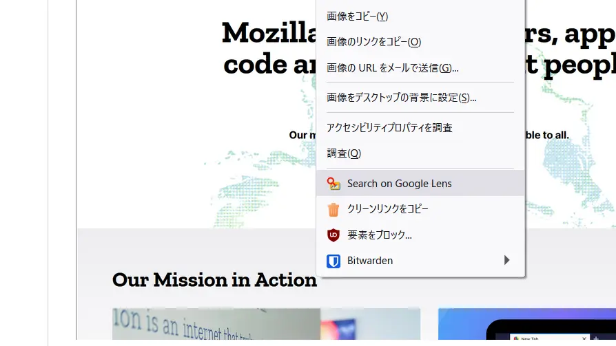
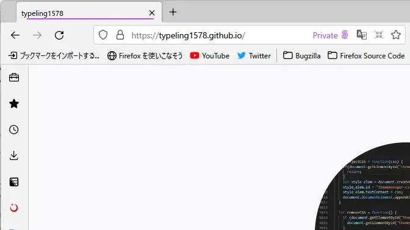
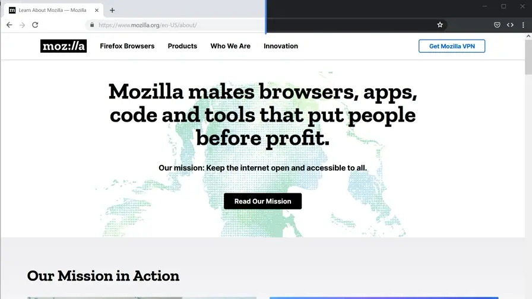
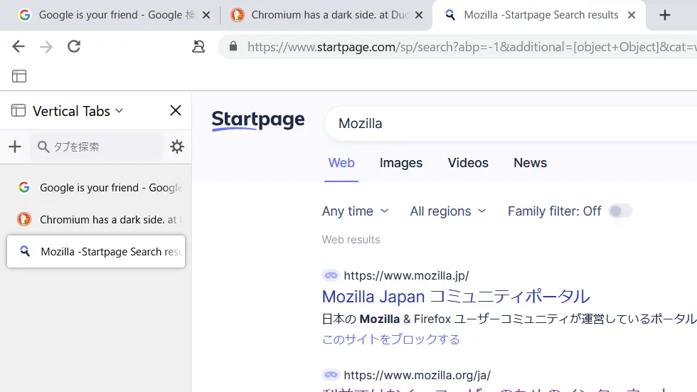

Search on Google Lens
サイト上の画像をGoogle Lensで簡単に検索できるようになります！
使ってみる

Private Tabs for Addon
プライベートウィンドウにうんざりしていませんか？ プライベートタブはどうですか？
使ってみる

MaterialFox-Plus (開発終了)
MaterialFoxのたくさんのバグを修正したものです！
使ってみる

Vertical Tabs (開発終了)
シンプルでパワフルな垂直タブバー
Proton UIにインスパイアされた垂直タブアドオン！
使ってみる